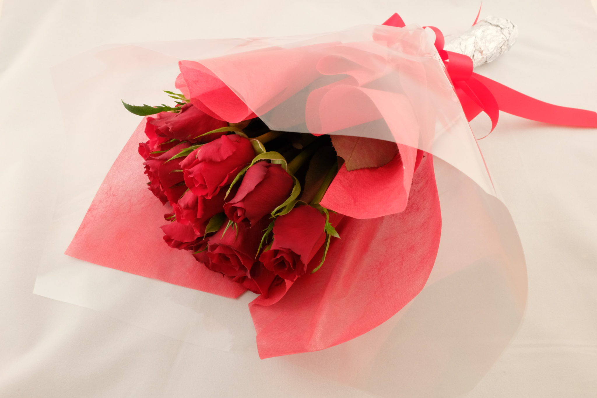
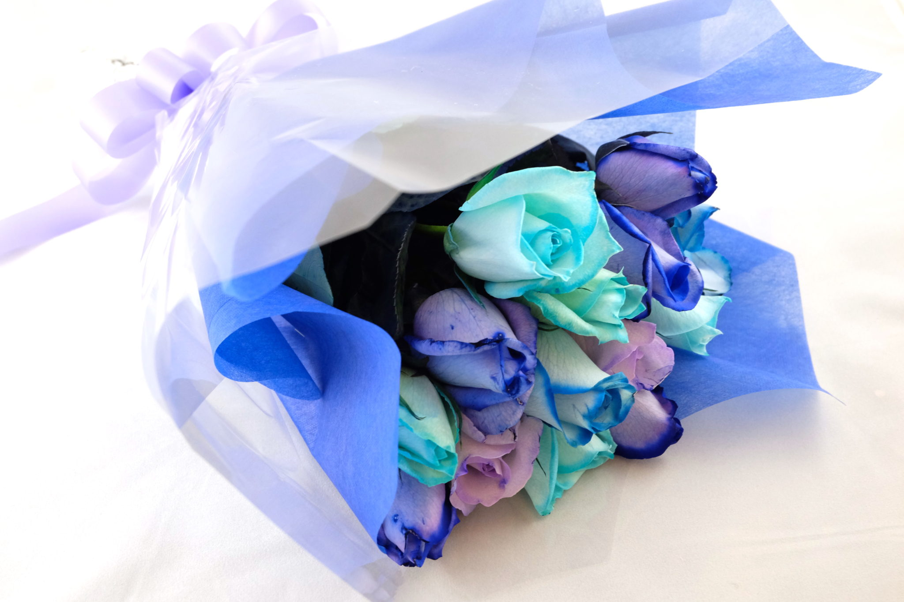
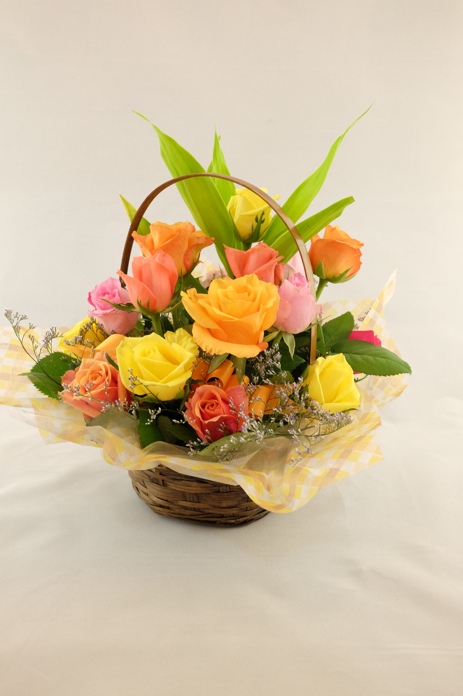
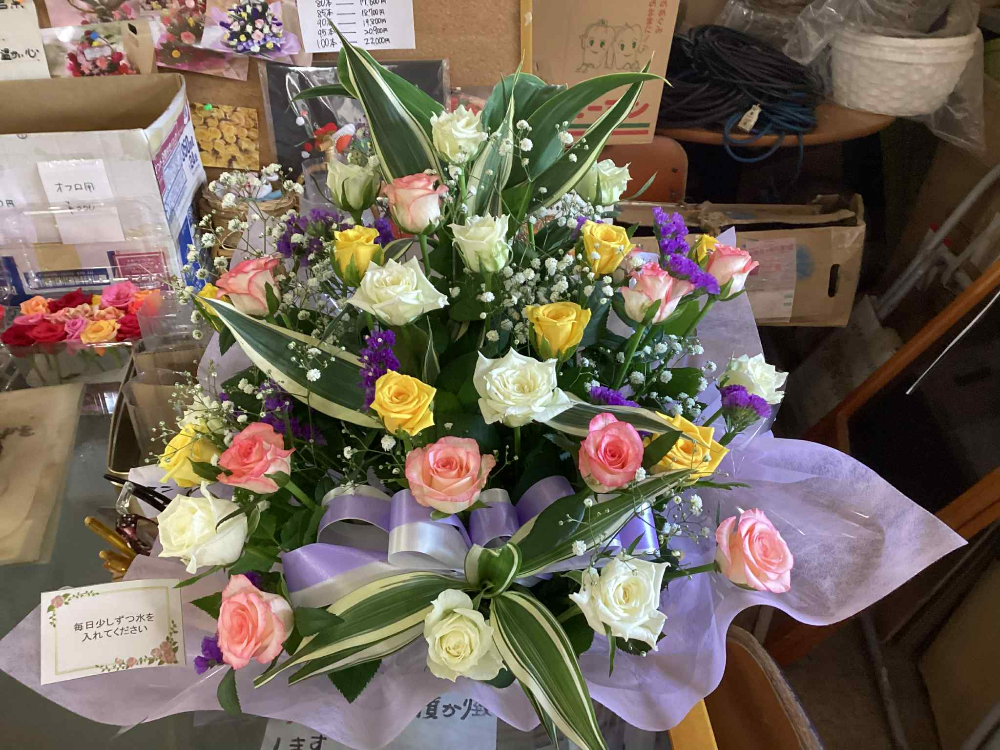
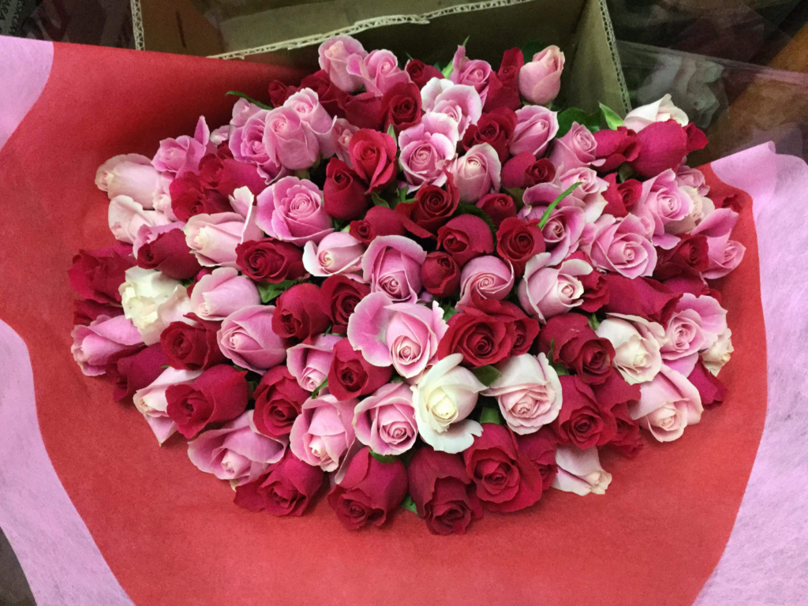
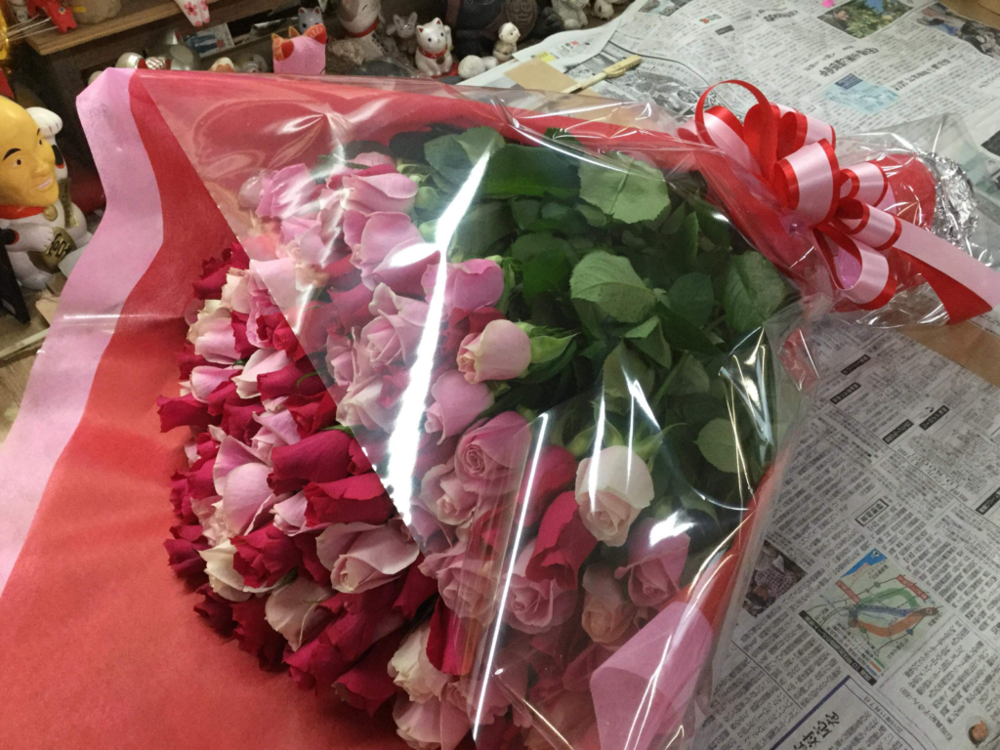
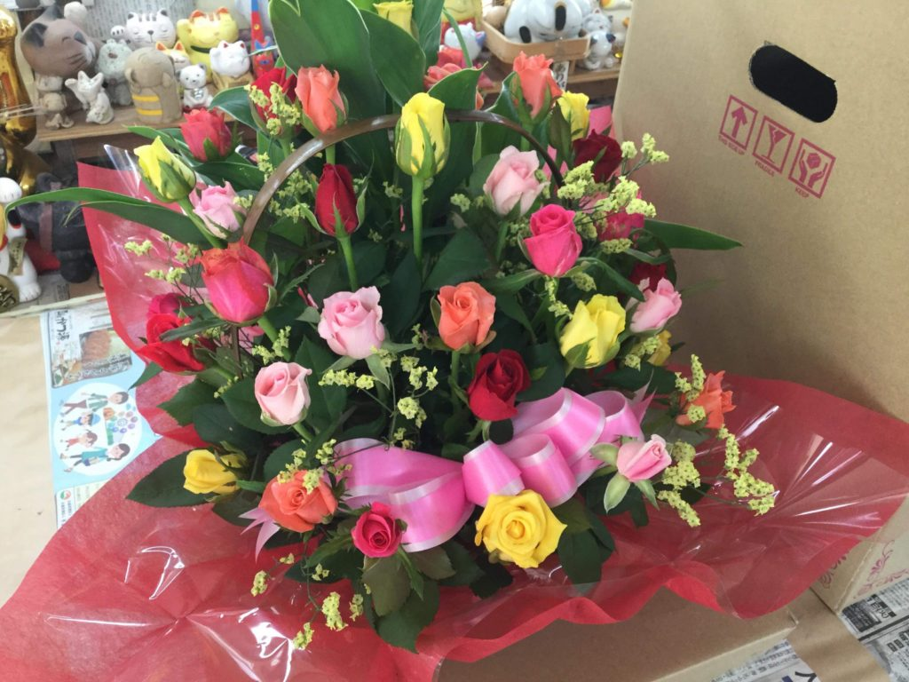

納豆菌米糠ぼかし
発酵の力を活かし、土の中の微生物が働きやすい環境を整えます。

Miyakonojo Rose Farm
宮崎県都城市の矢野バラ園。納豆菌米糠ぼかし、自家製堆肥、土壌への丁寧な手入れで、花束やアレンジメントに生命力のあるバラを届けます。
Greeting
元サイトが持つ親しみやすさ、日々の農園記録、手づくりの栽培姿勢を残しながら、写真の迫力とスクロールの動きで農園に入っていくような体験へ。
ブログ、販売、栽培法、アクセスの導線を整理し、初めて訪れた人にも注文まで迷わない構成にしています。

Live From Farm
バラ園ブログで発信されてきた季節の便り、離任式や卒業式の花束、お盆の供花アレンジメント。農園の日常が伝わる言葉を、サイト全体の温度として残します。


Farm Film
既存素材を重ね、ゆっくり寄っていく映像のように見せるループ演出です。
Cultivation
発酵の力を活かし、土の中の微生物が働きやすい環境を整えます。
農園で循環する素材を使い、根が健やかに張る土づくりへつなげます。
土に空気と水の通り道をつくり、バラが力強く育つ足元を守ります。
Order
バラは主に花束またはアレンジメントで販売。ご予算、色、本数、発送先に合わせて相談できます。全国発送は送料別、花はクール便でお届けします。
Gallery



Blog Direction
最近の投稿、季節の作業、ご注文事例をトップに差し込み、更新されるたびにサイトの鮮度が伝わる導線にします。
Access
〒885-0044 宮崎県都城市安久町5547-2